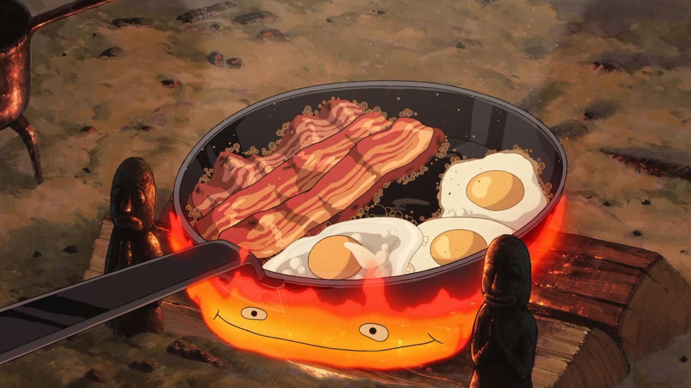

Calcifer's Breakfast (Howl's Moving Castle)

Ingredients
- 3 slices of bacon
- 6 large eggs
- 1 loaf of bread
- 1 slab cheese
Instructions
- Heat a large pan over a medium-high heat.
- Add 3 slices of bacon to the pan and cook until crispy.
- Reduce the heat and crack 6 eggs into the pan next to the bacon. Cook to your preference.
- Remove the pan from the heat and serve bacon and eggs onto plates.
- Cut thick wedges of both bread and cheese. Add wedges to each plate.
- Enjoy your cooked breakfast!